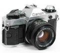
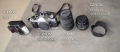
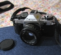
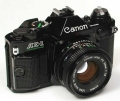
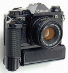
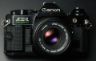

器材库 > 胶片单反相机 > AE-1 Program

规格总览
产品类型
手动对焦胶片单反相机
发布日期
1981-04
厂家推荐价格
60,000.00 （日元）
镜头卡口
Canon FD/FL/NEW FD
停产
是
取景规格
取景器
眼平五棱取景器, 固定
对焦屏
可更换, 8种
取景器信息
LED显示光圈，手控，P程序，闪光灯充电OK，调光确定
景深预视
有
曝光控制
测光模式
中央重点测光
测光范围
1EV~18EV
曝光模式
P（程序自动曝光）, S（快门速度优先自动曝光）, M（手动测光曝光）
ISO感光度
12-3200
自动曝光锁
有
快门
快门类型
电子控制，横走式，焦平面快门
快门速度
1/1000 - 2秒 + B门
闪光同步速度
1/60
外接闪光灯
外接闪光灯
佳能155A闪光灯
PC插孔
有
过片系统
卷片器
A型卷片器，每秒2幅
电源
电池
4G13/4LR 44 一枚
电池检测
有
外观
颜色
银色, 黑色
尺寸
141 × 88 × 47.5mm
重量
575g
其它规格
备注
加装50/1.4镜头92000日元
raymondhmd2013-05-12 23:374.75 分
操作性 4.50功能性 4.50美观性 5.00趣味性 5.00耐用性 5.00性价比 4.50
sc2012012-03-30 00:484.58 分
操作性 4.50功能性 4.50美观性 4.50趣味性 4.00耐用性 5.00性价比 5.00
xjz80673952008-05-05 18:484.42 分
操作性 4.50功能性 4.00美观性 5.00趣味性 5.00耐用性 4.00性价比 4.00

太难注册2006-03-28 14:294.58 分
操作性 4.50功能性 4.50美观性 5.00趣味性 4.50耐用性 4.50性价比 4.50
wchangyin22005-03-01 12:304.08 分
操作性 4.00功能性 4.00美观性 5.00趣味性 3.50耐用性 3.50性价比 4.50
磨石人2005-02-11 22:314.58 分
操作性 4.50功能性 4.00美观性 5.00趣味性 4.50耐用性 4.50性价比 5.00

蔡心2004-11-06 11:184.83 分
操作性 5.00功能性 5.00美观性 5.00趣味性 4.00耐用性 5.00性价比 5.00
单刀赴会2003-11-20 10:323.25 分
操作性 3.50功能性 3.50美观性 3.50趣味性 3.00耐用性 2.50性价比 3.50
张振宁2003-10-18 15:124.25 分
操作性 4.50功能性 4.00美观性 4.50趣味性 4.00耐用性 4.00性价比 4.50
江东九2002-11-28 20:034.17 分
操作性 4.50功能性 4.00美观性 5.00趣味性 4.50耐用性 2.50性价比 4.50
大自然2002-09-30 01:424.17 分
操作性 4.50功能性 4.50美观性 4.50趣味性 4.00耐用性 3.50性价比 4.00
freeman_yan2002-08-03 00:304.42 分
操作性 4.00功能性 4.50美观性 4.50趣味性 4.50耐用性 4.50性价比 4.50
似懂非懂2002-07-07 09:274.08 分
操作性 4.50功能性 2.00美观性 4.50趣味性 4.00耐用性 4.50性价比 5.00
高思2002-04-27 00:043.92 分
操作性 5.00功能性 4.00美观性 4.00趣味性 4.00耐用性 3.00性价比 3.50
AirforceOne2002-04-17 13:064.08 分
操作性 4.00功能性 3.50美观性 5.00趣味性 4.00耐用性 4.00性价比 4.00
摇头2002-04-09 23:283.42 分
操作性 3.50功能性 3.50美观性 3.50趣味性 3.00耐用性 3.00性价比 4.00
茄子2002-04-09 21:103.58 分
操作性 3.50功能性 3.50美观性 4.00趣味性 3.50耐用性 3.00性价比 4.00
产品图 / 样片
佳能 AE-1 Program

佳能 AE-1 Program

佳能 AE-1 Program

佳能 AE-1 Program